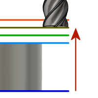

Altezza di ritrazione consente di impostare l'altezza a cui si sposta l'utensile prima del passaggio di affondamento successivo. Il valore di impostazione dell'altezza di ritrazione deve essere superiore a Altezza di avanzamento e Parte superiore. L'altezza di ritrazione viene utilizzata insieme all'offset successivo per stabilire l'altezza effettiva.
|  |
Altezza di ritrazione |
- Altezza di sicurezza: offset incrementale da Altezza di sicurezza
- Altezza di avanzamento: offset incrementale da Altezza di avanzamento
- Altezza parte superiore: offset incrementale da Altezza parte superiore.
- Altezza parte inferiore: offset incrementale da Altezza parte inferiore.
- Parte superiore modello: offset incrementale da Parte superiore modello.
- Parte inferiore modello: offset incrementale da Parte inferiore modello.
- Parte superiore materiale grezzo: offset incrementale da Parte superiore materiale grezzo.
- Parte inferiore materiale grezzo: offset incrementale da Parte inferiore materiale grezzo.
- Contorno/i selezionato/i: offset incrementale da un Contorno selezionato sul modello.
- Selezione: offset incrementale da un Punto (vertice), Spigolo o Faccia selezionati sul modello.
- Origine (assoluto): offset assoluto da Origine definita in Setup o Orientamento utensile all'interno dell'operazione specifica.